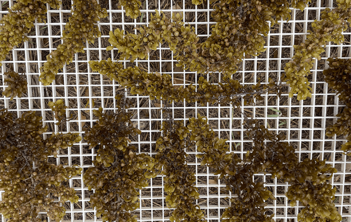
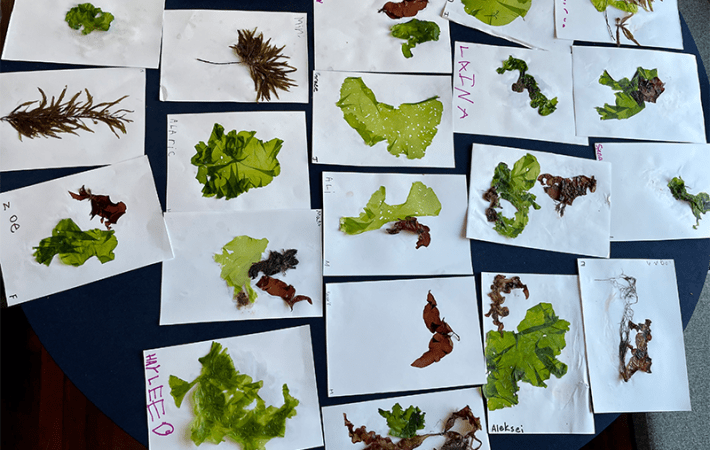
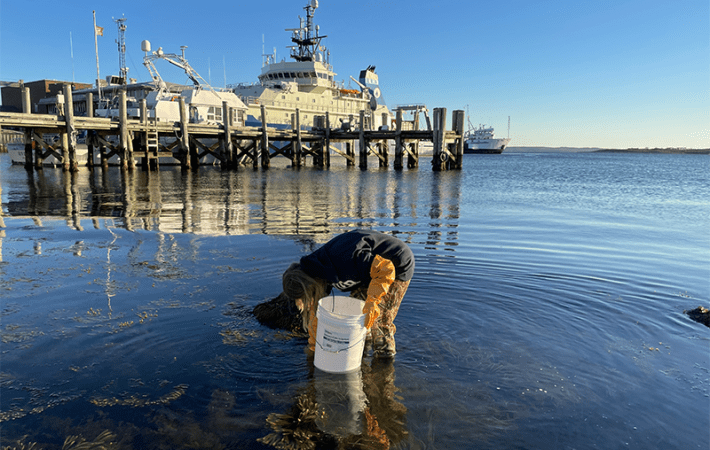
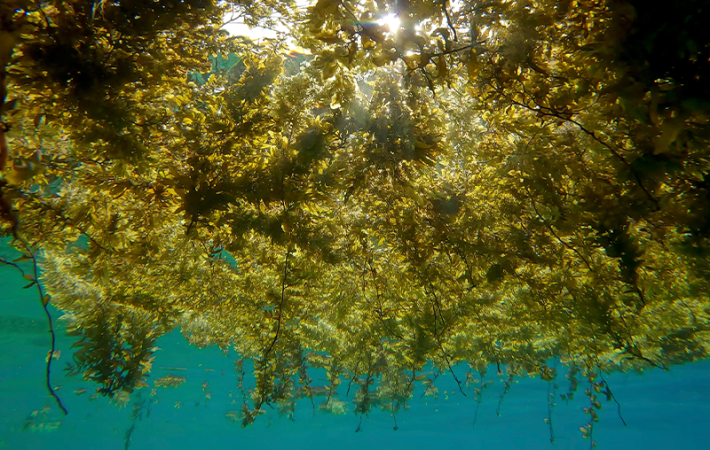

Each time Loretta Roberson finds herself in an ominous shadow while scuba diving off the coast of Puerto Rico, she discovers that the culprit is Sargassum—large mats of golden-brown seaweed floating overhead.
Roberson, a scientist at the Marine Biological Laboratory in Woods Hole, Massachusetts, has led a team to develop a seaweed farm in Puerto Rico for several years. But unlike the varieties grown at the farm, and unlike most seaweeds, the genus Sargassum includes species that spend their entire lives floating in the ocean waves. Air-filled bladders the size of small peas called pneumatocysts buoy the algae up to the sea surface where its ochre fronds aggregate to form enormous rafts.
For more than a decade, the amount of Sargassum has exploded in tropical Atlantic and Caribbean waters. “There’s always been Sargassum in the Caribbean, but not at the levels that we’re seeing now,” says Roberson. Each year massive tangles of the seaweed grow in the open ocean and then wash ashore in mountainous drifts, befouling toney resorts and nature reserves alike. The largest seaweed blooms have contributed to steep declines in visits to once-idyllic tropical beach destinations—one study reported a 9 percent drop in tourism across the Caribbean due to Sargassum in 2011.
There was more than 9 million tons of Sargassum in 2015 and over 24 million tons in 2022.
As it decays, the seaweed doesn’t just vex sunbathers; it also kills marine life. As a short-term measure in some places, bulldozers and dump trucks remove rotting piles of the beached macroalgae, with most of the mess winding up in landfills. But Roberson is applying her knowledge of seaweed to find uses for this overabundance of Sargassum. She is working with Shishir Chundawat of Rutgers University and José Avalos of Princeton University to lead a multidisciplinary network of collaborators from eight research institutions and one company that is exploring how to transform the glut of Sargassum into products, finding economic value in the problematic seaweed.
Their project, the Sargassum Biorefinery, or SaBRe, is part of the Schmidt Sciences Virtual Institute on Feedstocks of the Future (VIFF). A biorefinery transforms raw materials into products just as an oil refinery does, but it uses biomass—in this case Sargassum—as the raw material instead of petroleum. The institute’s five projects aim to make it more cost-effective to use organic matter currently regarded as waste, says Genevieve Croft, Schmidt Sciences senior program scientist. “We have all this biomass lying around that is not only not being used, but could be an environmental harm if we’re not using it,” she says. “Each of these projects is tackling an economic opportunity, but also potentially an environmental challenge.”
The gravity of the environmental challenge posed by Sargassum is what motivates Avalos. “People are suffering economically, and ecosystems are getting ruined,” he says. “It’s a growing crisis.”
Sargassum is naturally found in the center of the North Atlantic, an area known as the Sargasso Sea, which is defined by swirling ocean currents.
“It is a beautiful seaweed, and it has its own unique, essential habitat for organisms,” says Roberson. Sargassum is nursery and hunting ground for hundreds of species of fish and invertebrates as well as sharks, rays, dolphins, and eels. Young sea turtles rest on the mats, and find food and shelter amid the seaweed blades. Ten animal species live exclusively in this floating Sargassum ecosystem.
But, for the past decade and a half, Sargassum has been proliferating far beyond the Sargasso Sea, covering a wide swath of ocean now called the Great Atlantic Sargassum Belt, which extends in a band across about 5,500 miles of the Atlantic Ocean—from West Africa to the Caribbean Sea to the Gulf of Mexico.

TRASH TO TREASURE:Sargassum fronds, like these drying in Puerto Rico, could become the raw material for a host of products, from biofuels to fertilizers. Credit: Loretta Roberson.
While the amount of floating seaweed in the belt waxes and wanes with the seasons, its peak amounts have grown over the years. According to satellite measurements analyzed by researchers at the University of South Florida, there was more than 9 million tons of Sargassum in 2015, more than 20 million tons in 2018, and over 24 million tons in 2022. Estimates indicate that 2025 will be another record year: In May there were nearly 38 million tons of the seaweed floating in the Great Atlantic Sargassum Belt, according to an update from the researchers.
Large volumes of the squishy brown seaweed are pushed into coastal waters and onto beaches by waves, currents, and winds. On beaches, dead Sargassum covers sand in a wide ribbon parallel to shore or forms hillocks several feet tall. As it decays, the seaweed releases rotten-egg smelling hydrogen sulfide and ammonia, toxic gases that can cause human health problems including nausea and breathing difficulties.
Sargassum drifts piled on beaches can reduce the availability of sea turtle nesting sites and can make the already perilous journey from nest to waves even harder to navigate for emerging hatchlings. Where decaying Sargassum floats offshore, the mats can block turtles from surfacing for a breath of air and prevent sunlight from getting to corals, seagrass, and other marine life below. Massive influxes of rotting Sargassum infuse water with excess nutrients and deplete oxygen, killing fish, crabs, urchins, and mangrove trees.
As it decays, the seaweed doesn’t just vex sunbathers; it also kills marine life.
Coastal communities in Mexico, including in the state of Quintana Roo on the Yucatán Peninsula, have been grappling with the problems of excess Sargassum for years. In 2022, Judith Rosellón Druker, a research scientist with the Mexican government, interviewed Quintana Roo residents about how Sargassum has affected their coast. They described a crisis. “Some people were telling me, I cannot go to the beach and enjoy it anymore because it smells horrible and the landscape is depressing,” she says. As one resident she interviewed put it, “Everything dies along the coast.”
The locals she interviewed also described the economic effects of the environmental changes. While some described new job opportunities with companies managing the Sargassum, many more reported a loss in income from fishing and businesses linked to Quintana Roo’s tourist epicenters, such as Cancun and Playa del Carmen. A 2022 study led by the Inter-American Development Bank estimated that economic activity drops nearly 12 percent when Quintana Roo coasts are swamped by Sargassum.

POSTCARDS FROM THE SEA:Seaweeds, which are actually algae, not plants, can be pressed and dried, like these specimens, which were made by kids during a public outreach event, the Woods Hole Science Stroll. The green leaves are Ulva, also called “sea lettuce,” the red ones are Palmaria, and the brown one on the left is Sargassum. Credit: Loretta Roberson.
So Sargassum represents a double-edged sword. Swirling in the Sargasso Sea at a population right-sized for the environment, Sargassum creates crucial habitat. But once Sargassum is headed for a coast, “you cannot consider that an ecosystem that should be protected,” Rosellón Druker says.
While there is still more to learn about why Sargassum is proliferating so rapidly, a key cause is likely the dramatic increase in nutrients, including nitrogen from fertilizers, carried into the ocean by runoff. It’s also possible that nutrients are arriving with dust blown off the Sahara Desert, which settles into the Atlantic. The amount of such windblown dust is increasing as the climate changes and the Sahara grows drier.
The warming temperatures and abundant sunlight in the tropics also help the seaweed grow more quickly. A study published in 2023 reviewed the effect of projected climate warming on Sargassum and found that by 2050 it’s likely that the blooms will last for more of the year and happen at higher latitudes. If ocean waters get too warm, vast rafts of seaweed may die during the hottest months. While predicting long-term, future ecological events in rapidly changing oceans is uncertain, it’s possible that the Sargasso Sea’s population of Sargassum may multiply in warming waters, sending rafts of seaweed to mid-latitude beaches along the United States East Coast.
Most of the Sargassum gathered from beaches is destined for landfills, but as uses for the seaweed as a feedstock—or raw material—are emerging, new companies are popping up across the Caribbean to take advantage.
While making use of Sargassum is relatively new, other types of seaweed have been used for thousands of years for food and more recently to make chemicals to stimulate plant growth, bioplastics, and renewable energy. Converting seaweed to energy has a much smaller environmental footprint than traditional oil and gas production, says Michael Huesemann, an engineer at Pacific Northwest National Laboratory who studies methods to develop biofuels, vegan protein for foods, and other products from seaweed. Unlike other sources of biomass, seaweed doesn’t require freshwater or land, he adds. Huesemann has not yet worked with Sargassum but can see the appeal because its blooms mean there is no need to farm it, as is typical for other seaweeds used in industry.
Using Sargassum to produce biofuels is of keen interest to Caribbean nations, such as Barbados, that are transitioning to renewable energy. In 2019, Legena Henry, a mechanical engineer and University of the West Indies lecturer, and her undergraduate students were searching for ways to make biofuels locally. Experimenting, they discovered that useful quantities of biogas could be produced from a combination of rum distillery wastewater and Sargassum.
Sargassum represents a double-edged sword.
With Henry as the CEO, Rum and Sargassum, Inc. spun off from the university and today is operating a large biodigester—a tank that uses microbes to break down organic compounds in Sargassum and wastewater into biogas. With conversion kits installed, four cars are now running on biogas instead of gasoline.
The project plans to eventually convert 120 conventional taxis serving Barbadians to run on this Sargassum-based fuel. Initially, Rum and Sargassum will sell compressed natural gas to the taxis. After two years, the profits will be used to build a 250-killowatt biogas plant. “The taxis will not even know when they switch over to renewable biogas, except their costs will go down,” says Henry. She hopes investors will help Rum and Sargassum increase the scale of biogas production and estimates that 32 similar biogas plants would be needed to rid Barbados beaches entirely of Sargassum.
Building on existing uses for seaweed, the Sargassum Biorefinery team is one year into a five-year search for new ways to turn Sargassum into a bevy of products.
“The impact of the project transcends national boundaries,” says Chundawat. Solutions developed could be implemented in all locations currently vulnerable to Sargassum, he adds, which include more than 40 Caribbean and West African countries and territories.
What will they make from the seaweed? It may become biofuels, animal feeds, chemicals to replace petrochemicals, bioplastics, and pharmaceuticals, says Avalos. “But we haven’t committed to any specific products,” he adds. Discovering more about Sargassum and how to break it down into its component parts will help answer that question, says Chundawat.
Before new uses for Sargassum are found, there is more to learn about the seaweed’s basic biology and ecology. So last fall, Roberson and her team collected samples of Sargassum from the water and beaches of Puerto Rico and sent them to project partners.

BUCKET SCIENCE:A Falmouth High School student collects Sargassum samples in Woods Hole, MA, in front of the Marine Biological Laboratory with the Woods Hole Oceanographic Institute dock and ship in the background. Credit: Loretta Roberson.
With her colleagues, Roberson is exploring the biology and growth rates of the three main types of Sargassum found in blooms—S. fluitans and two varieties of S. natans. If they have distinct compositions, each type may be useful in different products.
One challenge posed by turning Sargassum into a feedstock is that, as it lives and floats in the ocean, seaweed absorbs toxic heavy metals, including arsenic. This can be beneficial as seaweed can be used to remove toxics from water, but hazardous in products made from the seaweed. “You can’t just feed it to animals,” says Chundawat, explaining that the project might need to strip toxic compounds out before Sargassum is utilized.
But Sargassum’s ability to concentrate elements from seawater may have a distinct upside if it also holds onto rare earth elements—valuable metals used in technologies such as phones, computers, electric and hybrid vehicles, and televisions. Small amounts of these elements are naturally found in seawater and accumulate in seaweeds, although it is currently unknown how much builds up in Sargassum.
“When you grow seaweed in [seawater], certain rare earth elements … get bioconcentrated in the seaweed by a factor of 10,000 to a million, depending on the seaweed, and depending on the elements,” says Huesemann. While the elements concentrate in seaweed, Huesemann cautions that the quantities found so far are too small to be economically valuable. Engineers from UCLA and Roberson are working together to learn how Sargassum takes up rare earth elements and how best to extract them.
While Roberson focuses on the biology of Sargassum, other researchers are focused on its microbiome, including yeast and bacteria that help break down the seaweed. Microbes, like those used in Henry’s biodigester, release enzymes that break complex compounds into simple ones. Those simple compounds become the building blocks for products produced in biorefineries.
Analyzing microbes on Sargassum collected from Caribbean beaches, Chundawat and his colleagues are discovering which wild microbes and enzymes naturally break Sargassum apart. Rutgers University biologist Debashish Bhattacharya and colleagues are working to sequence the genomes of such microbes. “We’re getting insight into the actual genes that are involved in the breakdown of Sargassum,” says Chundawat.

THE (UN)WELCOME MAT:Floating rafts of Sargassum form crucial habitat for a variety of ocean creatures. But overproduction of the brown algae causes problems at sea and ashore. Credit: Andriy Nekrasov / Shutterstock.
However, brown seaweeds like Sargassum are often harder to break down than other seaweeds. To speed up the process in biorefineries, the researchers plan to engineer super-efficient enzymes and microbes. After finding enzymes that break down Sargassum in the wild, they will engineer versions that break down the seaweed more effectively—a type of directed evolution guided by computational modeling. Avalos will then develop microbes that secrete the improved enzymes.
Many of the microbes of interest are bacteria, but Avalos is focused on yeasts that can digest Sargassum and live in saltwater. Yeasts have advantages, he says. They can be engineered to produce enzymes and proteins that are harder for bacteria to produce, and they don’t seem to get infected by viruses, Avalos explains.
Once there are enzymes that efficiently break down the seaweed, the team will explore what products can be made from the resulting compounds and whether other microbes and physical conditions, such as high pressures and temperatures, can further transform those compounds into useful products.
Despite the project name, the Sargassum Biorefinery does not plan to build an actual biorefinery. Rather, the project aims to develop processes and technologies to convert Sargassum into products, paving the way for future biorefineries.
“A dream that we always talk about within the SaBRe team is having a floating biorefinery,” says Roberson. If vessels collecting the Sargassum also had the technology to process it, products could be made right on the boat. “So while we’re collecting, you know, pass it straight into the feed of the biodigester,” she says.
Whether or not floating biorefineries become a reality, gathering Sargassum while it is still at sea could prevent massive piles of it on beaches and in coastal waters. So Roberson and her colleagues are developing methods to skim the seaweed from the sea surface and haul it onto vessels. Other technology may someday help gather the seaweed too, like electric self-driving tugboats that can tow heavy bags of seaweed to biorefineries onshore, says Roberson. Sargassum forecasts are becoming detailed enough to track where rafts of seaweed are floating so that boats know where to collect them.
But what will happen if Sargassum overproduction stops after the infrastructure for biorefineries is built? “Maybe we’ll one day have a time where we could control the amount of nutrients that are being dumped into the ocean and not have these large blooms,” says Roberson. Sargassum farms in the ocean could keep the industry going, she says.
“I think the Sargassum project is not only addressing the problem of the now,” says Chundawat. “It could also be looking at creating opportunities in the future when you could develop seaweed farming technologies in the years to come.” 
Lead image: Arkadij Schell / Shutterstock
References
- Original Article: https://nautil.us/new-life-for-rotting-seaweed-1238008/